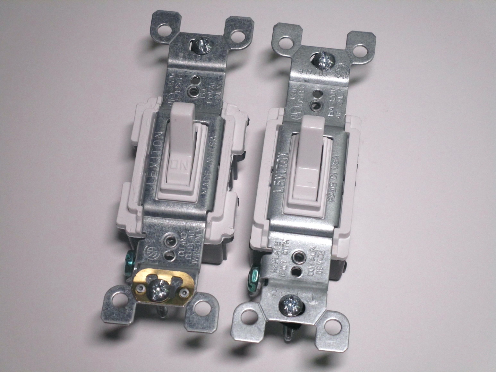
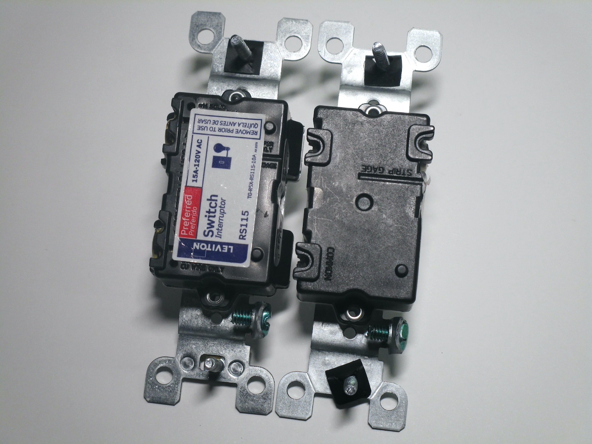
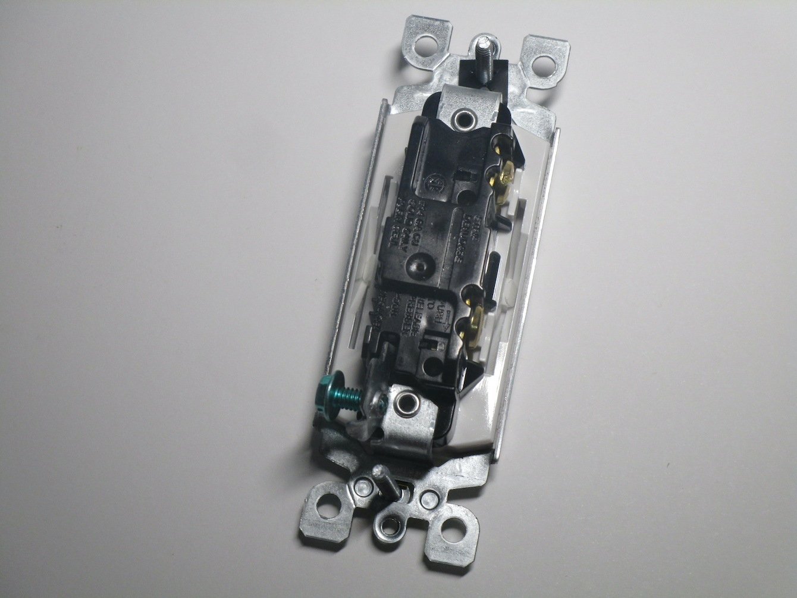
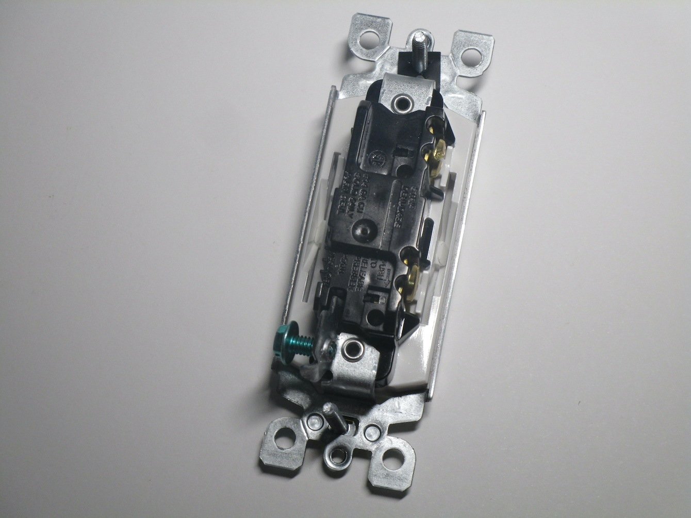
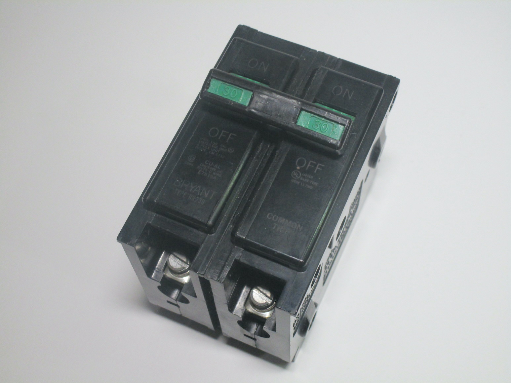
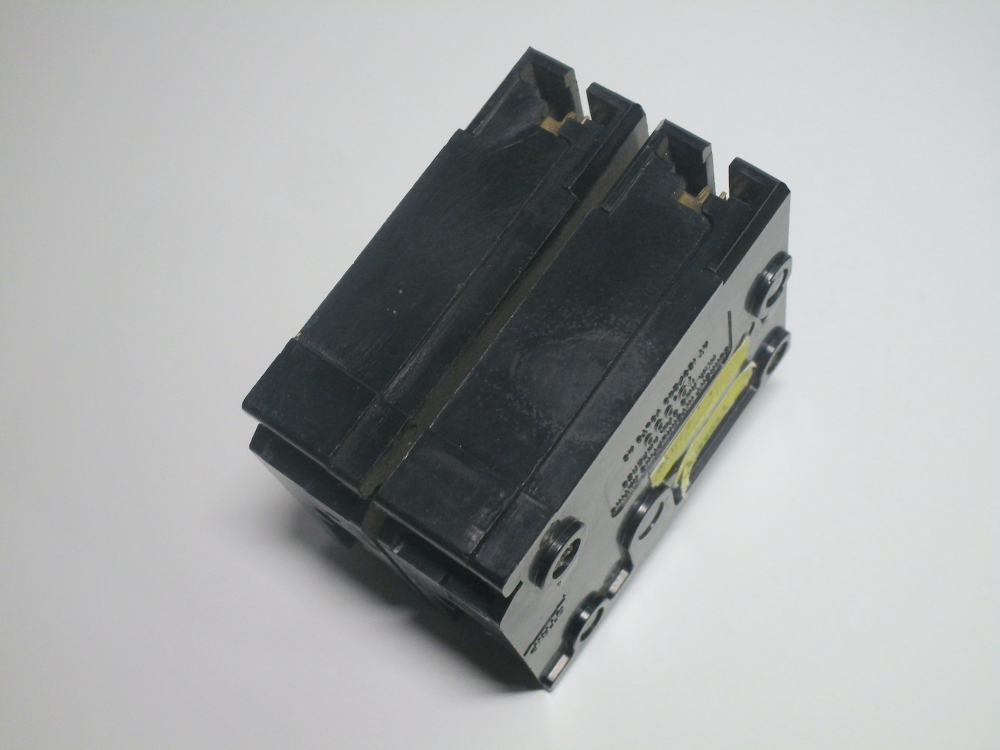
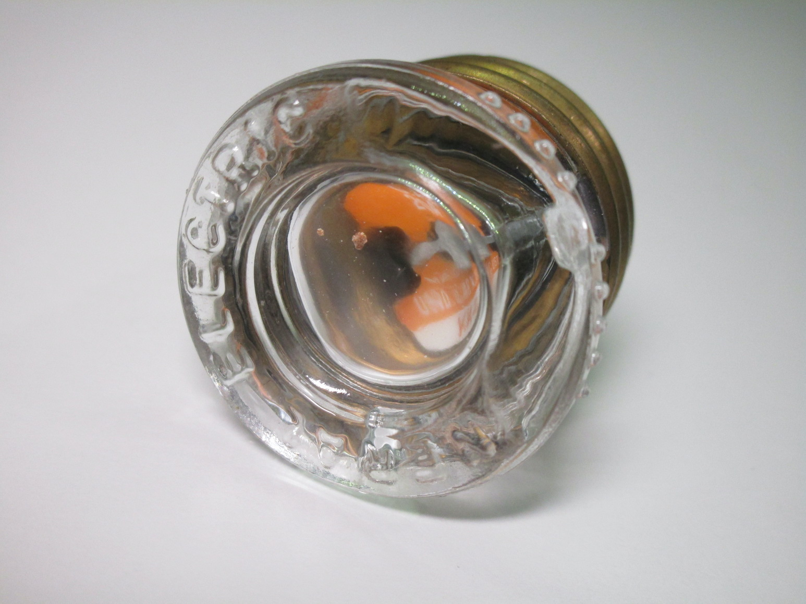

North American electrical items
North American electrical devices are quite different from ones found in other parts of the world, as they evolved differently over time. Despite this, there are some American influences found in some electrical systems elsewhere, primarily the wall boxes, which are used in Italy, Australia, South Korea and other countries.
Standard types of light switches
Rating: 15A 125V
The most common styles of light switches found in North America are of a style that's nowadays very uncommon in Europe: they work similarly to toggle switches used in hobby electronics, with a lever that sticks out from the front and is pushed up or down to turn the lights on or off.
Their construction and wiring are done similarly to American power outlets, and thus present the same issues, though they use a different style of cover plate which is held in place with two screws,
 {kind=link}
{kind=link}

"Decora" light switch
Rating: 15A 277V
In recent years, a different style of light switch has become popular and is the style most commonly used in newer installations. These are called "paddle" or "Decora" switches, as they have a very large surface area which is easier to press and use the rectangular style of face plate.
Interestingly, this light switch, made by Leviton, is rated to use not just on 120V circuits but also 277V ones, which are common to see for lighting in industrial or commercial installations using a 480V supply.

 

{kind=link}
Double-pole breaker
This is a double-pole breaker, which is used in on American 240V circuits, in this case a 30A one which is commonly used for dryers. Double-pole breakers are simply just two breakers that trip together, which ensures that both phases have been disconnected. As with most US breakers, the neutral isn't switched and is instead connected to a separate bus bar.
The use of a double-pole breaker is needed as in North America houses are fed with a split-phase 240V supply, which means that there are two line wires both at 120V with respect to earth. Most appliances just use one and a neutral, but high-powered devices such as electric stoves need the full 240V.
 {kind=link}
{kind=link}
Edison socket cartridge fuse
Edison socket fuses were the standard style of fuse in use in North America before breakers became common. They were traditionally made of glass, though newer ones use plastic, in order to see if a fuse was blown as well as to display its rated current.
The major flaw with these styles of fuses was that it was possible to swap the fuse with one of a higher rating, which risks overloading the wires and causing a fire. This was also an issue with the early types of fuses in use in Europe, however they were quickly replaced by the Diazed ones, which use special rings in the base to prevent the wrong fuse from being used.
Later on, the S-style of fuses were introduced, which used a fixed piece in the panel (which was difficult to remove) in order to prevent the incorrect size of fuse from being used. However, these were still fairly uncommon compared to standard fuses, and thus the problem persisted.
{kind=link}